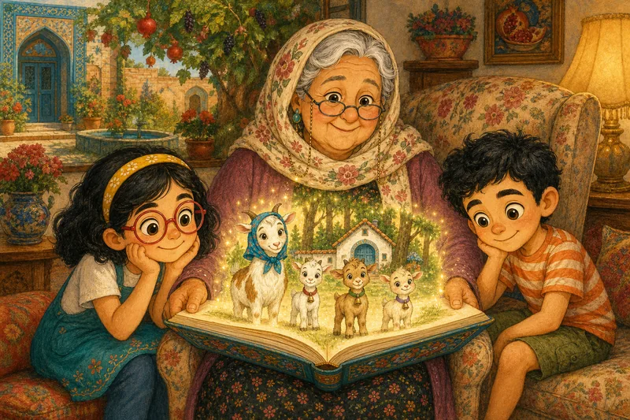
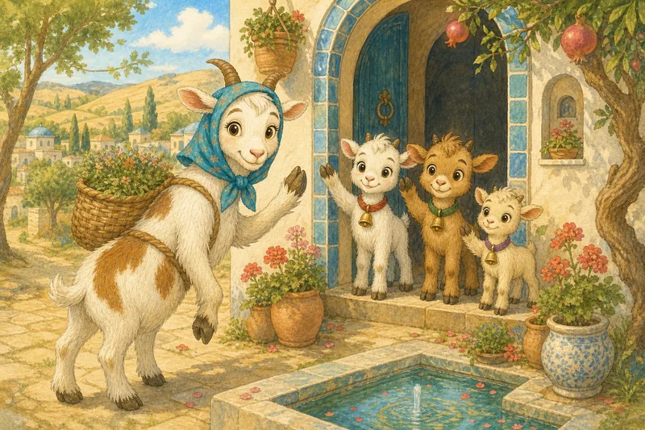
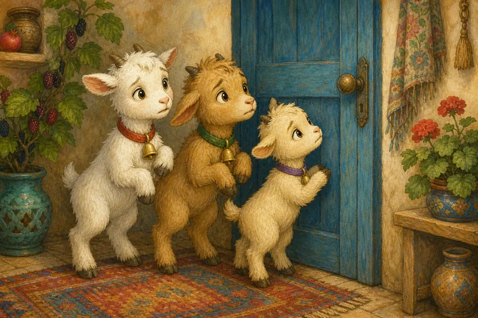
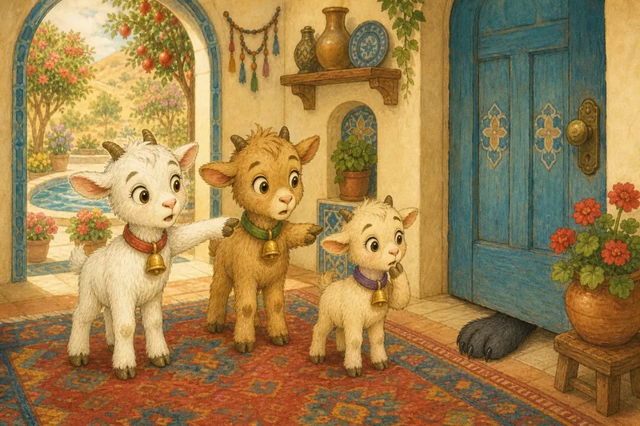
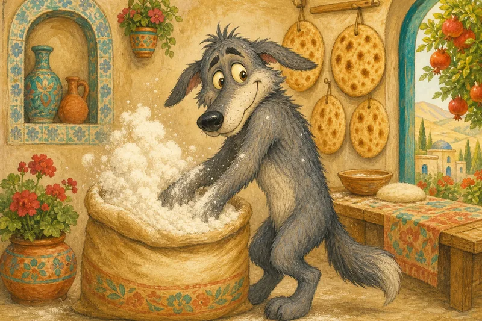
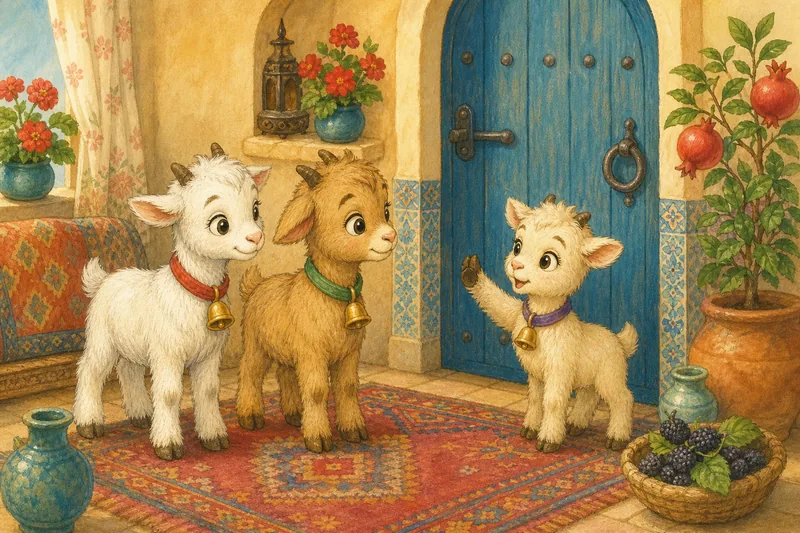
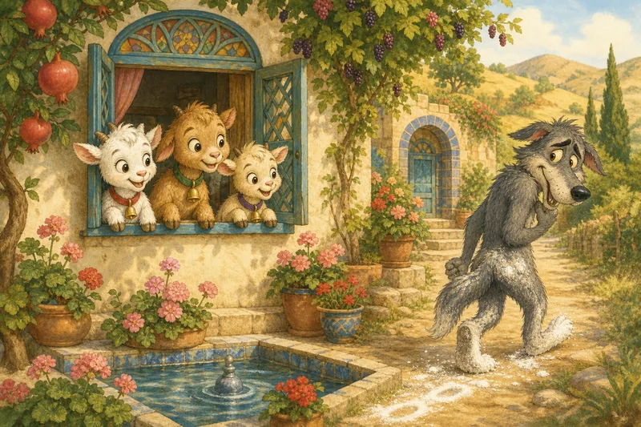
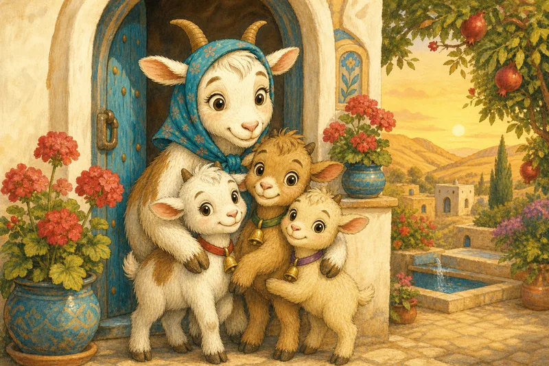

از کجا میدانی؟
کی پشتِ در است؟
این بازی به جاوااسکریپت نیاز دارد.
شنگول و منگول و حبهی انگور

مادربزرگ مهری یک قصهٔ خیلی قدیمی برایتان دارم. بچههای ایران سالهای سال این قصه را شنیدهاند.
یکی بود، یکی نبود. یک بزِ مادر بود که با سه بزغالهاش در خانهٔ کوچکی کنارِ جنگل زندگی میکرد. اسمِ بزغالهها شنگول بود و منگول و حبهی انگور.

یک روز صبح، بزِ مادر باید میرفت علف پیدا کند.
بزِ مادر وقتی رفتم، در را قفل کنید. فقط برای من باز کنید. وقتی برگشتم، آوازِ مخصوصِ خودمان را میخوانم.
بزِ مادر یادتان باشد: صدای من نرم است و پاهایم سفید. صدای گرگ کلفت است و پاهایش سیاه.
بزغالهها یادمان میماند!

کمی بعد، یکی در زد. تق، تق، تق!
بزغالهها کیه، کیه، در میزنه؟
گرگ منم، منم، مادرتون. علف آوردم براتون!
صدا کلفت و بلند بود. شنگول به منگول نگاه کرد.
شنگول تو مادرِ ما نیستی. صدای مادرمان نرم است. تو گرگی!

گرگ رفت و یک قاشقِ بزرگ عسل خورد تا صدایش نرم شود. بعد برگشت.
گرگ منم، منم، مادرتون. علف آوردم براتون!
این بار صدا نرم و شیرین بود. منگول مطمئن نبود. گفت: «پایت را نشانمان بده.» یک پای بزرگ و سیاه از زیرِ در پیدا شد.
منگول تو مادرِ ما نیستی. پاهای مادرمان سفید است. تو گرگی!

گرگ دوید پیشِ نانوا و پاهایش را توی آردِ سفید مالید. بعد دوباره برگشت.
گرگ منم، منم، مادرتون. ببینید، پاهام سفیده!
صدا نرم بود. پا هم سفید بود. شنگول و منگول دویدند که در را باز کنند.

حبهی انگور صبر کنید! گرگ میتواند صدایش را نرم کند. پایش را هم میتواند سفید کند. ولی فقط مادر آوازِ مخصوصِ ما را بلد است. آن را بخوان!
گرگ آواز را بلد نبود. زمزمه کرد. سرفه کرد. خواند: «لا لا لا...»

بزغالهها این آوازِ ما نیست. تو گرگی! برو!
گرگ آنقدر عصبانی شد که دوید و رفت تهِ جنگل، و دیگر هیچوقت برنگشت.

آخرِ سر، بزِ مادر به خانه آمد. آوازِ مخصوص را از اول تا آخر خواند. بزغالهها در را باز کردند و او را محکم بغل کردند.
بزِ مادر از کجا فهمیدید که واقعاً خودم هستم؟
حبهی انگور صدا را میشود تقلید کرد. پای سفید را هم میشود قلابی درست کرد. ولی هیچکس جز تو آوازِ ما را بلد نیست!
مادربزرگ مهری در بعضی کتابهای قدیمی، گرگ خیلی ترسناک است. در قصهٔ ما، فقط میرود. حالا آوا، نیما: حبهی انگور از کجا فهمید؟
دانستن یا حدس زدن؟
کلوچهٔ آوا غیبش زده!
کیان میگوید: «کارِ نیماست!»
آوا مهمترین سؤالِ این سایت را میپرسد:
«از کجا میدانی؟»
کیان کمی فکر میکند: «خب… نیما عاشقِ کلوچه است.»
این یک دلیل است. ولی برای دانستن کافی است؟ شاید نیما خورده باشد. شاید هم گربه! کیان دارد حدس میزند.
بعد آوا روی پیراهنِ نیما خردهکلوچه پیدا میکند. حالا یک سرنخ هست.
به سرنخی که کمک میکند بفهمیم چه چیزی درست است، نشانه میگوییم.
سرنخِ خوب و سرنخِ حقهای
در قصه، بزغالهها از سه سرنخ استفاده کردند: صدا، پا و آواز.
صدا و پا سرنخهای حقهای بودند.
گرگ توانست با عسل و آرد قلابیشان را درست کند.
آواز سرنخِ خوبی بود. فقط مادر بلدش بود.
سرنخِ قویتر کمک میکند حالتهای ممکن را از هم جدا کنیم.
فکر کن
- شنگول از کجا فهمید که مهمانِ اول گرگ است؟
- بارِ سوم چه چیزی نزدیک بود بزغالهها را گول بزند؟
- چرا آوازِ مخصوص از پای سفید بهتر بود؟
چقدر مطمئنی؟
یک سرنخ میتواند تو را مطمئنتر یا کماطمینانتر کند.
گاهی بهترین جواب این است: «هنوز نمیدانیم. بیا سرنخهای بیشتری پیدا کنیم.»
ایدهٔ اصلی
برای اینکه چیزی را بدانی، دلیلِ خوب لازم داری: سرنخی که کمک کند حالتهای ممکن را از هم جدا کنیم.
واژههای تازه
- دانستن: چیزی را دانستن یعنی دربارهاش درست بگویی، آن هم با یک دلیلِ خوب، نه از شانس.
- حدس: حدس جوابی است که میدهی وقتی هنوز دلیلِ خوبی نداری.
- امید: امید یعنی بخواهی چیزی درست باشد. ولی خواستن، آن را درست نمیکند.
- نشانه: نشانه سرنخی است که کمک میکند بفهمی چیزی درست است یا نه.
امتحان کن!
آن را میدانی، داری حدس میزنی، یا فقط امیدواری؟ کارتها را دستهبندی کن.
این بازی به جاوااسکریپت نیاز دارد.
امتحان کن!
بزِ مادر یک قانونِ بهتر برای باز کردنِ در میخواهد. کدام امتحانها را راحت میشود قلابی کرد و کدامها را نه؟
این بازی به جاوااسکریپت نیاز دارد.
خودت را بسنج
این بازی به جاوااسکریپت نیاز دارد.
با هم حرف بزنید
- برای یکی از اهلِ خانه تعریف کن یک بار حدس زدی و اشتباه کردی.
- برای خانوادهات یک سؤالِ رمزی بساز. چرا یک غریبه جوابش را نمیداند؟
آفرین، کارآگاه!
تو بهترین سؤالِ دنیا را پرسیدی: از کجا میدانی؟